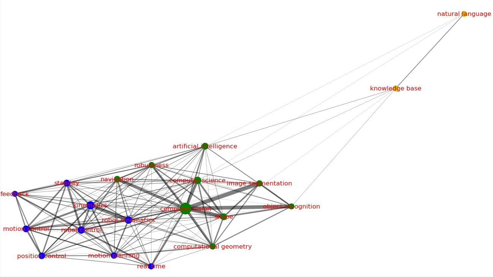
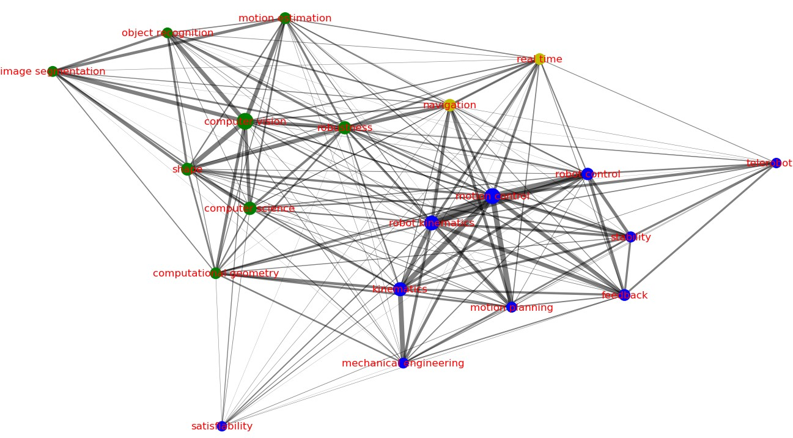
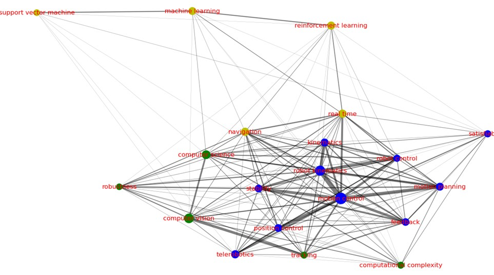
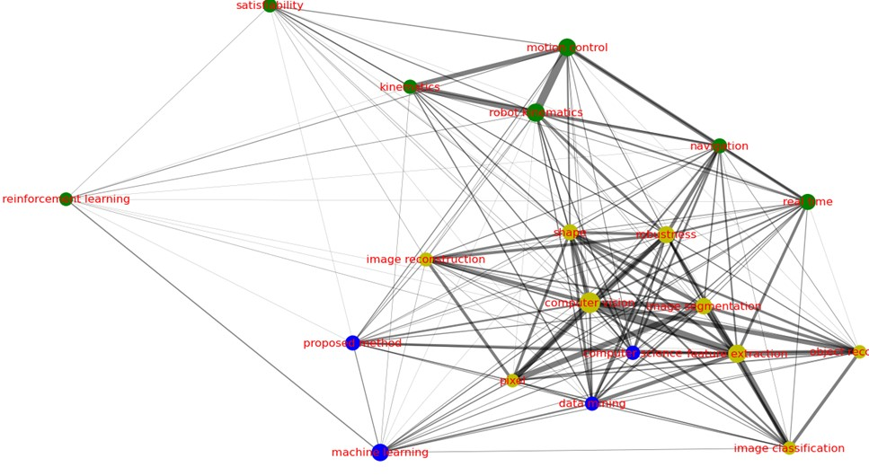
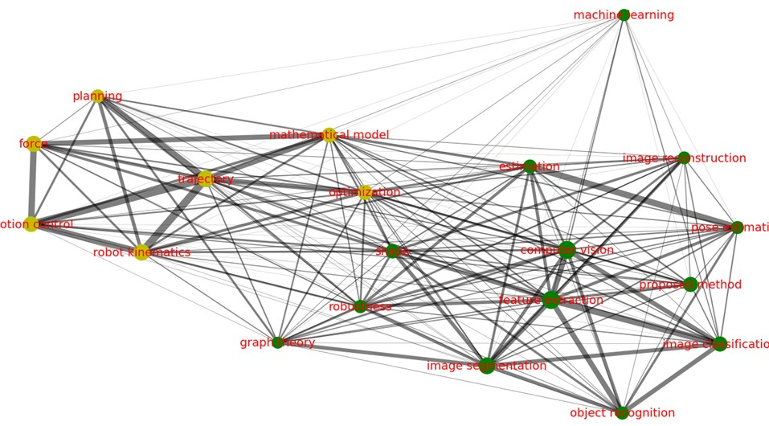
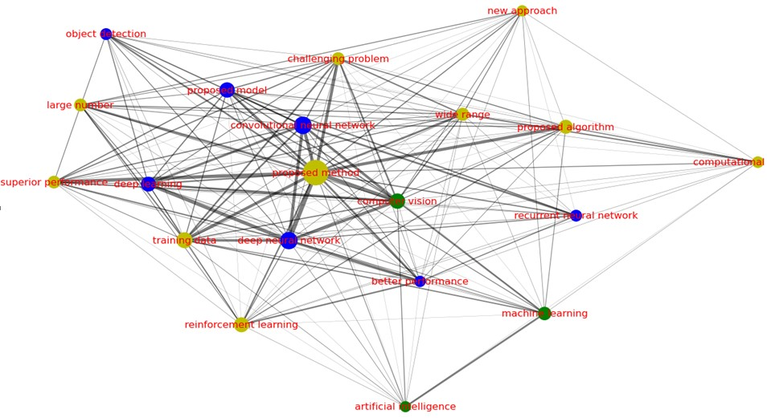

本文分析了在1990年到2019年期间人工智能方向的CCF推荐国际会议的论文数据。以中国学者引领的研究成果为出发点，采用数据挖掘、分析学习、数据可视化等方法，从论文数量和影响力、科研人员分布及合作情况、研究热点三个角度分析了论文发表情况。此外，阐述了AI各研究方向发展布局情况，分析出优势、发展中、潜力和弱势研究方向。数据分析结果表明，中国人工智能研究在2005年之后进入快速增长时段，包括计算机视觉、自然语言处理方向的论文数量开始大幅增长，论文质量和影响力也随之大幅提高，并逐渐发展为我国的优势研究方向。此外，中国在加强国际合作、增加国际合作论文产出的同时，独立研究能力有显著提高。
本文的分析对象为由清华大学提供的CCF推荐国际会议论文数据，共620312行。包含论文id，英文标题，中文标题，发表年份，引用数，关键词，发表会议，摘要，pdf链接，作者id，姓名，中文姓名，国家，单位，单位类型等字段，其中部分值丢失。
在原始数据中，有很多论文发表在非主会会议，为保证论文质量，对论文按照发表会议进行筛选，删除掉的论文数据有三种：
1. 属于demo，poster， short paper， student session，Symposium，tutorial， workshop等性质的论文数据。比如“CVPR Workshops”，“Proceedings of the ACL 2011 Student Session”等。
2. 发表会议非CCF推荐会议，即论文所属会议不在《中国计算机学会推荐国际学术会议和期刊目录-2019》（详见参考文献2）的人工智能推荐会议板块。
3. 会议名称丢失。
经过去除噪音之后将剩余论文会议名称简化，
比如将“Proceedings of the 27th AAAI Conference on Artificial Intelligence, AAAI 2013”，“AAAI”等映射为AAAI。
最终共得到有效论文数据92910篇。历史发文数量前六名的会议发文数量历史如下：
可以发现，在2015年及之前，机器人领域论文的ICRA会议占比一直处于第一位，说明当时机器人领域处于热点地位，IJCAI和ICCV会议是隔年举办的会议，呈周期性上涨趋势。CVPR会议在2006年之后呈增长趋势。NIPS在1997年之后开始呈缓慢上升态势。 AAAI会议从2003年之后整体呈上升趋势，在2013年之后增长趋势变快，并2016年超过ICRA会议，成为发表论文数量最多的会议。2019年时，除NIPS会议外其他会议发文数量相差不大，呈现“百家争鸣”局面。
本次实验将所有论文分为六类方向， 分别为:1.机器学习和神经网络(ML)，2.计算机视觉(CV)，3.自然语言处理(NLP)，4.机器人(ROBOT)，5.智能体(AGENT)，6.知识表示(KR)。 由于一些会议已经具备鲜明的方向，则可以直接将这些会议的论文划分到对应的方向， 使用已有方向的论文训练模型之后对综合类会议的论文进行分类。 各方向的会议如下表所示:
| 会议类别 | 会议简写 |
|---|---|
| 综合类 | AAAI、IJCAI、ECAI、ICAPS |
| 机器学习和神经网络 | ICML、NIPS、COLT、NeurIPS |
| 计算机视觉 | ICCV、CVPR、ECCV |
| 自然语言处理 | ACL、EMNLP、COLING |
| 机器人 | ICRA |
| 智能体 | AAMAS |
| 知识表示 | KR |
其中，非综合类会议共有44062篇论文，将非综合类数据根据4:1划分得到30843条数据的训练集和8813条数据的测试集。训练逻辑回归模型之后对综合类会议论文进行分类，最后得到机器学习和神经网络方向论文21712篇， 计算机视觉方向论文17594篇，自然语言处理方向论文16638篇，机器人方向论文27031篇，知识表示方向论文2681篇，智能体方向论文7254篇。各个方向历史发文情况如下：
自然语言处理方向从2011年之后，发表论文数量有大幅增长，计算机视觉在2006年呈现转折点，此后开始呈现整体增长趋势，根据之前对会议统计结果， 可以发现这种现象与计算机视觉的国际会议有关,此类会议的隔年举办导致周期性波动，但AAAI，IJCAI等综合类会议中的计算机视觉方向论文数量抵消了部分影响， 在2019年，计算机视觉成为论文发表最多的方向。。 机器人方向于1990年就处于领先地位，2007年被计算机视觉首次超越。 智能体和知识表示一直处于低占比低增长的态势。
本文中国发表的论文指第一作者所属国家及第一作者所在第一单位所属国家皆为中国的论文。
论文发表数量是测度科研水平的重要指标，本节统计了1990-2019年间中国在各个方向论文发表数量占比。
结果显示，在2005年之前，中国在各个方向的论文发表占比相差不大，占比较低且比较平稳，在2005年之后，计算机视觉和自然语言处理开始分离出来，不断走高。 机器学习和神经网络方向在2005年有较大幅度增长后呈现平稳趋势，并于2015年之后再次大幅度增长， 智能体，机器人和知识表示一直处于低占比的平稳趋势。
2005年之后中国主导的机器学习和神经网络，计算机视觉，自然语言处理方向的论文数量开始增长，尤其是计算机视觉和自然语言处理，在2019年占比已经分别达到了43%和34%, 和世界范围内计算机视觉，自然语言处理发展趋势相吻合，说明中国的积极参与有力的推动了计算机视觉,自然语言处理领域的发展。
论文的被引用情况是测度科研影响力的重要指标，本节以中国论文被引用数以及中国在影响力排名前1%，5%，10%，20%的论文占比表征中国论文质量情况，同时统计中国各研究方向在影响力排名前5%的论文中的占比情况。
2005年及之后中国论文被引用数占比有整体提高的趋势，中国论文被引用数在2016年到达峰值，占比达34.4%。 在高影响力论文占比中，即便在前1%也有较大的比例，说明中国发表的论文整体质量较高，且包含影响力非常高的论文。
在影响力前5%的论文中，自然语言处理，计算机视觉2005年之前占比大部分时间在百分之十以下 ，近十年来突破百分之二十，到百分之三十。 机器学习和神经网络2005年之前前的引用率占比在5%以下，2005后在5%～25%之间。 机器人,智能体一直处于低占比的平稳态势，大部分时间占比在百分之十以下。
本节将发表论文的单位分为纯国内团队，国内团队主导，外国团队主导三类主体，以中国科研机构与国外机构合作的论文数量及占比作为合作强度的评价指标。 同时，评价方法强调合作关系中的主导作用，分析中国科研机构与国外机构的合作方式演化趋势。
在2008年之前，纯国内团队，国内主导，国外主导的论文发表数量相差不大，在2008年之后，纯国内团队的发表数量及占比都大幅提高，中国独立研发能力开始变强。 同时2010年之后，中国主导合作发表和国外主导合作发表文章数量有整体上升趋势，说明我国科研单位国际合作变得愈加频繁。
国际合作论文数量前十名分别为美国，新加坡，澳大利亚，加拿大，日本，英国，德国，意大利和法国。
高校/研究机构发表的论文数一直都处于主导地位，从2006年之后高校/研究机构主导，企业合作的论文数所占比例不断增高， 从2007年的0.34%到19年的1.84%，增幅达540%。且企业发表的论文数占比也从2006年的0.048%增长到2019年的0.24%，增幅达500%。从2014年开始企业作者所占比例实现五连增，在2019年达到了9.29%，这是2000以后的最高值，说明企业开始注重培养研究型人才，提高独立研究能力。 综上，高校/研究机构一直是论文发表的主力军，企业有较好的潜力。
本节按五年一个时间段，对不同时间段的关键词进行了数量分析，同时使用Louvain社区发现算法(详见参考文献3）对每个时间段数量前15名的关键词进行技术生态链的划分。
Louvain社区发现算法是一种基于图数据的社区发现算法，该算法的目标是最大化模块度。模块度也称模块化度量值，是目前常用的一种衡量网络社区结构强度的方法，
Louvain算法开始时将每个原始节点都看成一个独立的社区，社区内的连边权重为0。之后分两个步骤进行迭代：
1.算法扫描数据中的所有节点，针对每个节点遍历该节点的所有邻居节点，衡量把该节点加入其邻居节点所在的社区所带来的模块度的收益。并选择对应最大收益的邻居节点，加入其所在的社区。这一过程化重复进行指导每一个节点的社区归属都不在发生变化。
2.对步骤1中形成的社区进行折叠，把每个社区折叠成一个单点，分别计算这些新生成的“社区点”之间的连边权重，以及社区内的所有点之间的连边权重之和。用于下一轮的步骤1。
本小节的划分结果通过绘制关系图呈现，在所有关系图中，某关键词在当前时间段被使用次数越多，该节点越大；同时使用某两个关键词的论文数量越多，连接这两个关键词的边越宽。不同生态链的关键词使用不同颜色区分。使用弹性布局,某节点与其他节点联系程序越小，则节点偏离程度越大。有关分析结果如下：
1990年至1994年，热点主要在机器人和计算机视觉方面，此时，和机器人有关的论文主要围绕运动控制学，路径规划，位置控制，平稳性，实时等技术进行讨论。和计算机视觉有关的论文主要围绕图像分割，对象识别，导航，鲁棒性，计算几何学等技术进行讨论。
1995年到1999年，热点仍在机器人和计算机视觉，不同的是，在1990年到1994年和计算视觉有关的导航，实时技术开始向机器人领域偏移，机器人领域也有了机器工程学，遥控机器人等新技术的出现。
2000到2004年，在机器人方向，相关技术没有太大变化。和计算机视觉有关的论文开始围绕追踪等技术进行讨论。支持向量机，强化学习等机器学习技术已开始被广泛讨论。
2005年到2009年， 和计算机视觉相关的论文关于图像重构和图像分类技术的讨论增多。数据挖掘技术已经被广泛讨论，并和计算机视觉方向的论文有较为紧密的联系。
2010到2014年，和机器人有关的论文开始进行力控，轨迹，数学模型，优化等技术的热点讨论。和计算机视觉相关的论文开始了对姿态估计等估计技术的热点讨论。
2015到2019年AI领域变化非常大，与深度神经网络，循环神经网络，卷积神经网络等神经网络技术的讨论成为热点话题，强化学习，深度学习等机器学习技术的讨论也变得更为广泛和紧密。在这个阶段有大量论文集中在算法研究，这些论文主要在大范围，大数，挑战性难题，新途径，训练集，计算复杂度，更好的表现等方面进行了讨论。
论文份额，影响力，增长率都处于较高水平
论文份额，影响力，增长率都处于较低水平
论文所占份额及影响力一般，增长率较高
论文所占份额及影响力较低，增长率较高
通过分析中国各研究方向发展布局情况，可以为进一步调整发展方式提供依据，本文将人工智能领域分为计算机视觉，自然语言处理，机器学习和神经网络，智能体，机器人，知识表示，参考《中国科技论文统计结果:科研机构创新发展报告》（详见参考文献1）中的划分定义并作修改，根据波士顿矩阵方法，统计中国在各个方向的发表论文数量及被引用数情况，将六个方向从发文数量占有率，发文数量占有增长率，在影响力前5%论文中占有率，及在影响力前5%论文中占有增长率四个维度划分为优势研究方向，传统研究方向，潜力研究方向，弱势研究方向四个研究方向。其定义如下：
1.优势研究方向：2010年至2019年，该区研究方向发文数量和在影响力前5%论文中平均占有率达20%。
2.发展中研究方向：2010年至2019年，该区研究方向发文数量和在影响力前5%论文中平均占有率在10%~20%，平均增长率达20%。
3.弱势研究方向：2010年至2019年，该区研究方向发文数量和在影响力前5%论文中平均占有率不足10%，平均增长率不足20%。
4.潜力研究方向：2010年至2019年，该区研究方向发文数量和在影响力前5%论文中平均占有率不足10%，平均增长率达20%。
2010-2019十年来各个方向论文数量和影响力情况如下表所示:
| 论文类别 | 论文数量平均占有率 | 发文数量平均占有增长率 | 在影响力前5%论文中平均占有率 | 在影响力前5%论文中平均占有增长率 |
|---|---|---|---|---|
| 机器学习和神经网络 | 12.13% | 13.03% | 17.02% | 51.06% |
| 计算机视觉 | 20.86% | 17.31% | 26.51% | 53.81% |
| 自然语言处理 | 21.09% | 18.62% | 34.73% | 50.97% |
| 机器人 | 6.79% | 27.65% | 5.46% | 26.80% |
| 智能体 | 4.50% | 31.51% | 3.64% | -33.54% |
| 知识表示 | 7.19% | 3.39% | 0.00% | 0.00% |
按照之前的定义标准，优势研究方向包含计算机视觉和自然语言处理，发展中研究方向包含机器学习和神经网络，弱势研究方向为知识表示，潜力研究方向包含机器人和智能体。对于优势研究方向，可明确发展引导的路径，对于发展中研究方向，可完善管理机制以引导发展，对于潜力研究方向，可采用加大科研投入的方式进行引导，对于弱势研究方向，可考虑加强基础研究。
近年来，世界整体人工智能领域都在快速发展，尤其在机器学习和神经网络，计算机视觉，自然语言处理领域，在各大国际会议的论文产出量大幅升高。伴随着世界AI发展大趋势，中国人工智能在2007年之后也进入快速增长时段，计算机视觉，自然语言处理方向的论文数量开始大幅增长，论文质量大幅提高，有越来越多新的单位发表计算机视觉，自然语言处理方面的论文，并逐渐发展为我国的优势研究方向。此外，中国在加强国际合作，增加国际合作论文产出的同时，独立研究能力有显著提高。
[1]中国科技论文统计结果:科研机构创新发展报告[R].北京:中国科学技术信息研究所，2019.
[2]中国计算机学会推荐国际学术会议和期刊目录-2019[S].中国计算机学会，2019.
[3]Blondel.Fast unfolding of communities in large networks[J].Journal of Statistical Mechanics: Theory and Experiment,2008,30(2):155-168.